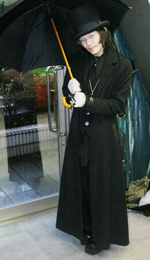

Gyaruo and Aristocrat are terms describing period-specific subcultures in Japan. Modernly, they're used by fashion youth to describe two distinct looks of what these scenes wore throughout their daily lives.
They're two incredibly distinct looks on a surface level and even seemingly opposite, but have some overlap depending on the local scene and are known to mashup. It was not just the "clothing style" that unified those who looked this way, but also the way they spent their time together. These youths were inherently counter-cultural to conservative modern Japan.
I started out in EGL communities. I slowly relaxed into the grittier look of "visual gyaruo." Even though aristocrat and gyaruo seem like opposites, I admire their mature, sleek styles founded in designer brands and luxury fabric— What aristocrat lacks in color it makes up for rich velvets and laces. Gyaruos wore a lot of designer labels to express that specific look of a wealthy rockstar. These two were anything but modest; they are flashy and intricate, so everything I could want and inspire from in fashion.
Gyaruo is short for ギャル男 or "GAL man/otoko". It's not to be confused for a "male version" of gal, but a co-existing subgroup of gyaru culture. Similarly, gyaru is ギャル, loaned from the english word "gal."
Gal youth wasn't politically-tied, though countered conservative authorities as a result of chasing what fashions & types of people made them happy; usually these preferences were decoden nails, eye-consuming lashes, or bleached wild hair depending on what their groups liked from the magazine, Egg.
Alternatively, gyaruo coexist amongst gal circles. They were predominantly men who wanted to emulate a range of American rock styles with that Japanese flair; as opposed to boxy and baggy, gyaruo coordinates were structurally skintight and sexy. Scene-wise, both gals and gyaruos were clubbing or enjoying their youth in some way (and probably still do) but most importantly they were like-minded and naturally formed personal circles.
You're probably not going to find an original gyaruo because the original community and scene no longer exists as it did before. Nowadays the term's utility updated to a label for gal "descendants" or those inspired by the historical phenomenon that was Heisei "Gyaru".
In a way this accessible term (and I say this neutrally) obscures the historical context of gal culture and has invented a type of new derivative fashion across the world. A contemporary Japanese gal may differ from an original Japanese gal, may differ from a Chinese gal, may differ from an American gal. Not to mention the subcultural styles. In the end the only thing that makes a true gyaru is their appreciation for gyaru history and fashion, and a participation in its occurring scenes that descended from the first.
EGL fashion is short for "Elegant Gothic Lolita," a certain style of 90's-2010s street fashion defined by hyper femininity and a "bell" torso silhouette designed for adults. This hyper feminine focus will utilize laces, ruffles, and most importantly a "cute" elegance. It's a luxury fashion, and its origins are in designer labels from Vivienne Westwood and Christopher Nemeth as well as independent designers like Baby The Stars Shine Bright, Metamorphose Temps De Fille, and Angelic Pretty.
Alternatively, EGA stands for "Elegant Gothic Aristocrat," with a parallel style also grounded in ruffly visuals. Aristocrat is not gothic lolita fashion, gothic ouji (boystyle), or some umbrella of the two... but has overlapping elements. It's particularly known for its equally frilly, high-quality construction and textures but tunes into the mature aspects of elegance using blocky and long silhouettes.
Aristocrat is a broadly-encompassing style of antique goth fashion with a Japanese solution. 90's Japanese styling is important to what makes J-Aristocrat's flair work, because it does not look the same under a Western style context of antique gothic.
Identifying ouji from aristo can be difficult... but with the right eye for silhouettes and fashion, you'd know that ouji has an affinity for femininity and "cute" (no matter how gothic it is) just like lolita fashion, even in long pants.
EGL and EGA is not Victorian or Rococo fashion, or trying to look like either of the two. To really understand the stylistic idiosyncracies of Lolita, Ouji, and Aristocrat, you could study some Gothic Lolita Bible scans.
It might be a controversial opinion, but it's not really possible to dilute either of these terms to singular accessories like you can with contemporary fashion genres and their clothing articles. When you emulate these styles, every piece must correlate with each other and read into their respective styles as whole. Because of this meticulous styling technique, most J-fashion communities identify each other by addressing their outfits as "coordinates".
You either get it or you don't!
That being said, don't be afraid to buy from gyaruo/aristocrat brands and creating your own style. I often wear my AATP crown necklace with Amekaji. Part of fashion enthusiasm is supporting the artists and designers who create your clothes.